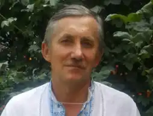

Василь Тибель народився 5 лютого 1961 року в селі Велике Поле Березнівського району Рівненської області. Закінчив середню школу № 1 в місті Березне. Навчався в Рівненському інституті інженерів водного господарства, спеціальність — інженер-механік. Після навчання працював за фахом. Живе в селі Біла Криниця (Рівненська область).
Одружений. Дружина — Тибель Валентина Зіновіївна. Разом виховали двоє дітей: старшу доньку Катерину, та сина Івана. Любить своїх онуків; Марійку і Костю.
Член НСПУ з 2018 року. Хобі письменника — колекціонування незвичних і рідкісних рослин, квітучих кущів, а також рідкісних раритетних видань та книг. Пише оповідання, романи, публіцистику в жанрі: казки, детективна фантастика, містика, дитячі пригоди. Писати почав ще в студентські роки. Першим романом був "Щоденник водяника" (неопублікований). Публікуватися письменник почав після 2010 року: першою публікацією стала повість "Вовчиха". Оповідання й публіцистика регулярно друкувалися у різних виданнях: дитячому журналі "Крилаті", його друкував літературний альманах "Дніпро", газета "Літературна Україна", "Українська газета", "Газета для українців в Італії", зокрема, такі оповідання: "Зимові химери", "Бурштин із комахою всередині", "Поштові ластівки", "Злодій із гусячого поля". Після того, як роман "Тріанські рішкунці" в 2015 році був відзначений на Міжнародному літературному конкурсі "Коронація слова" дипломом "Вибір видавця", він був виданий у видавництві ПВД "Твердиня" м.Луцьк, накладом 5000 примірників. В 2016 році, у тому ж видавництві, вийшло перше видання роману-казки "Медова казка", яка стала лауреатом і переможцем Міжнародного літературного конкурсу "Коронація слова" серед творів для дітей молодшого шкільного віку. На основі "коронованого" роману-казки "Медова казка" надруковано навчальний зошит для 2-го класу НУШ "Я досліджую світ". А в 2019 році вийшов підручник для 2 класу НУШ " Я досліджую світ", під редакцією Л. Андрушко, О. Лінник та інших, в якому 4 тема "Спільнота" повністю присвячена твору "Медова казка". Нині більше 200 шкіл в Україні працюють за цією програмою. В 2018 році у видавництві "Фабула" м.Харків побачила світ книга "Бурштин", котра є чи найпершою спробою в українській літературі погляду на "бурштинову проблему" Полісся в людському, а не політичному вимірі. В творі органічно використано "народна демонологія" і відчувається зв'язок з "наївним мистецтвом". В 2023 році у видавництві "ДІПА" м.Київ побачила світ книжка "За рогом смерті. Обмін" — художня книга про російсько-українську війну. Події роману відбуваються у 2016–2018 роках. Крім художньої літератури Василь Тибель пише ще й статті в спеціалізовані популярні журнали "Дім, сад, город", "Огородник", "Сонце-сад", а також видав серію книг популярної і спеціалізованої літератури.